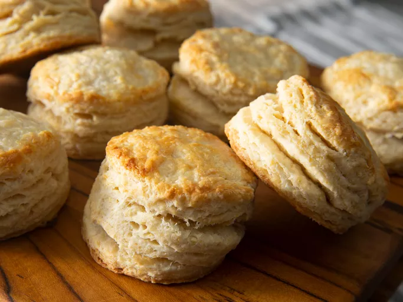

Chef John's Buttermilk Biscuits
Rating: 4.8 | 1,267 Reviews | 510 photos
This deceptively simple buttermilk biscuit recipe can come out a million different ways with some very minor variations on the ingredients and amounts. This one's my favorite — flaky, but not dry; chewy, but not tough; and crisp in just the right spots. Ice-cold butter and some extra dough folding are key to having lots of flaky layers in each golden brown buttermilk biscuit.
Ingredients
- 2 cups all-purpose flour
- 2 teaspoons baking powder
- ¼ teaspoon baking soda
- 1 teaspoon salt
- 7 tablespoons unsalted butter, chilled in freezer and cut into thin slices
- ¾ cup cold buttermilk
- 2 tablespoons buttermilk for brushing
Directions
- Preheat oven to 425 degrees F (220 degrees C). Line a baking sheet with a silicone baking mat or parchment paper.
- Whisk flour, baking powder, baking soda, and salt together in a large bowl. Add cold butter slices and cut into the flour with a pastry blender until the mixture resembles coarse crumbs.
- Make a well in the center of the mixture. Pour cold buttermilk into the well and stir gently until just combined.
- Turn dough onto a floured work surface and pat it together into a rectangle.
- Fold the rectangle in thirds. Turn dough a half turn, gather any crumbs, and flatten back into a rectangle. Repeat twice more, folding and pressing the dough a total of three times.
- Roll dough on a floured surface to about 1/2 inch thick. Use a 2 1/2-inch round biscuit cutter to cut biscuits. Reroll any scraps to cut more biscuits; you should get 12 total.
- Transfer biscuits to the prepared baking sheet. Press an indent into the top of each biscuit with your thumb. Brush buttermilk over the tops.
- Bake in the preheated oven until biscuits are flaky and golden brown, about 15 minutes.
- Enjoy!